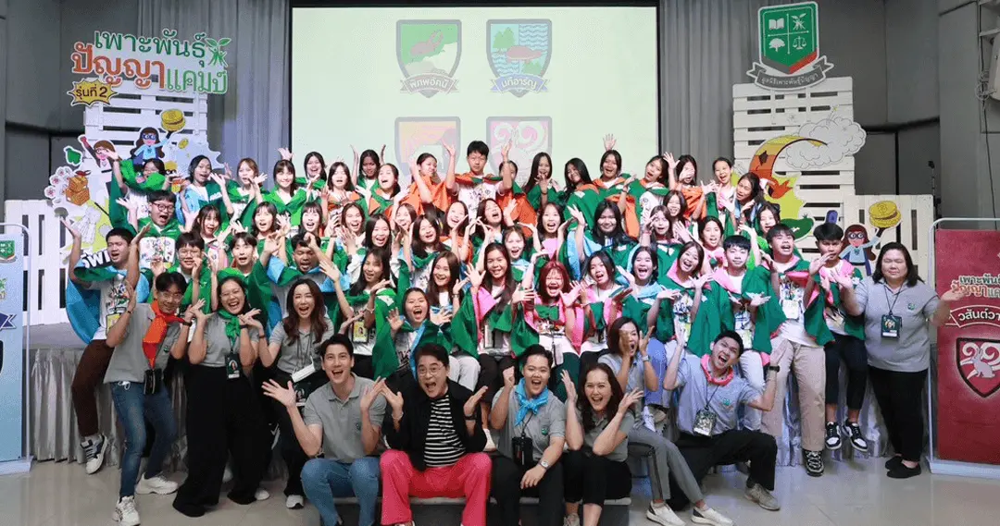
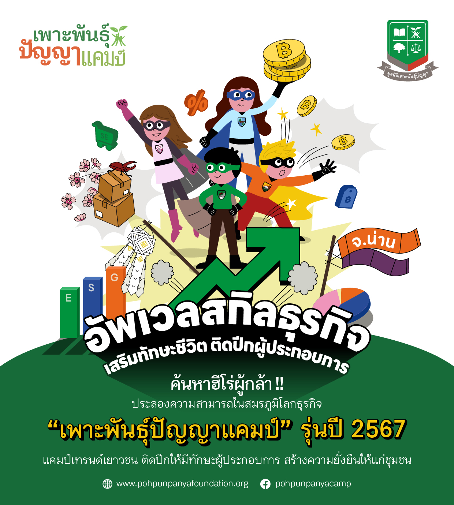
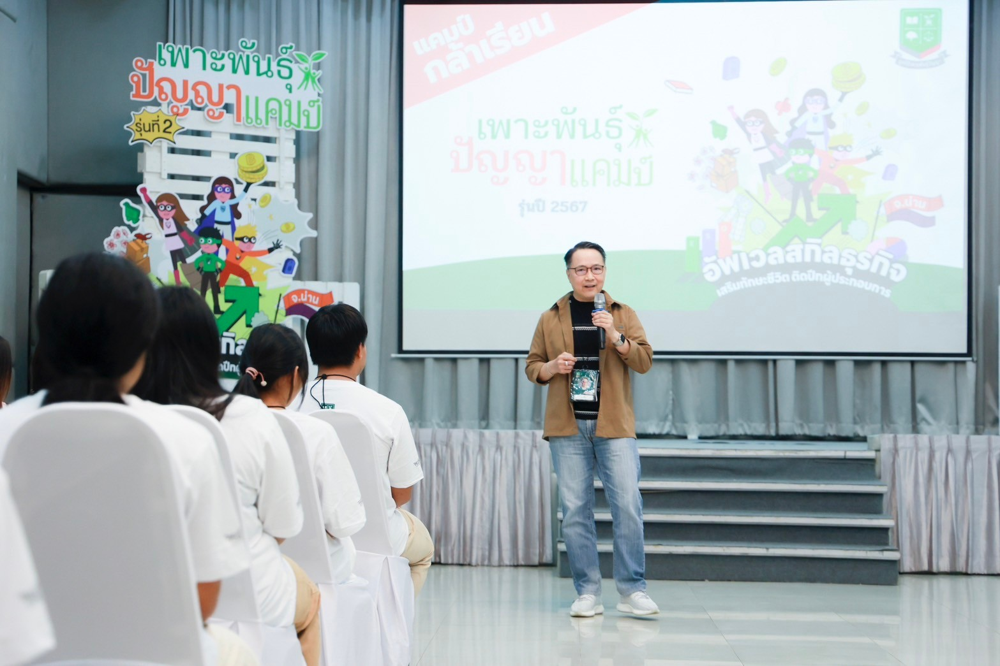
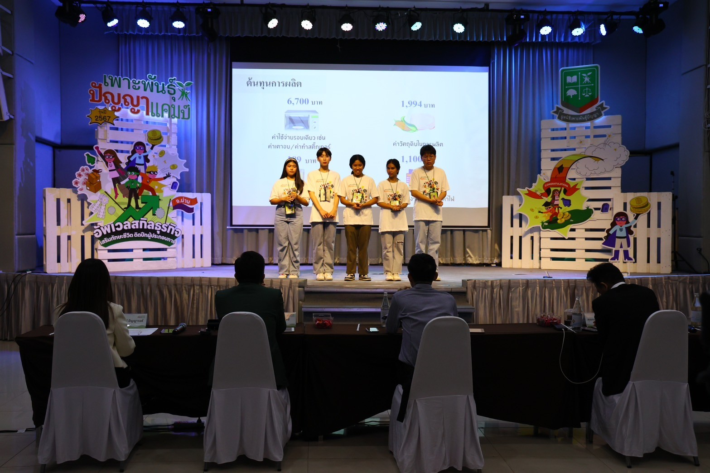
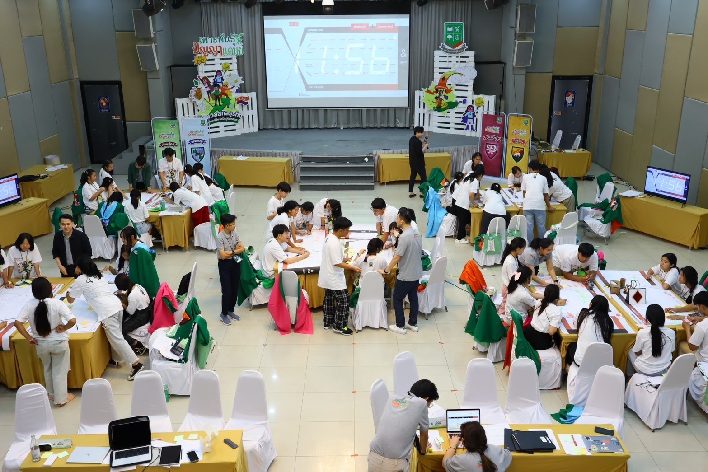
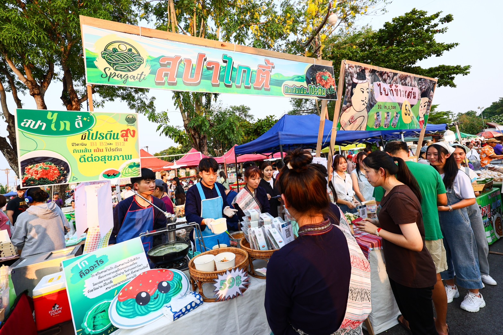
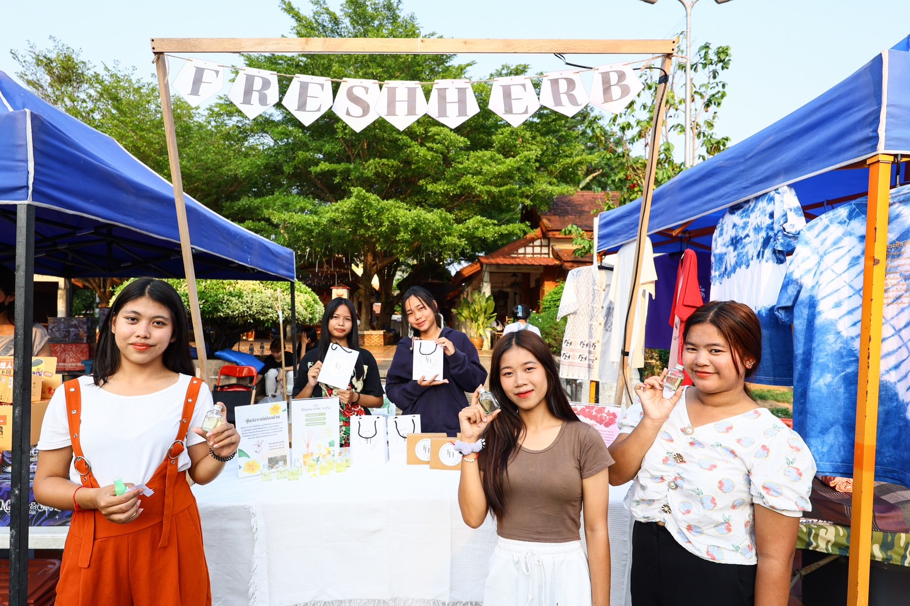
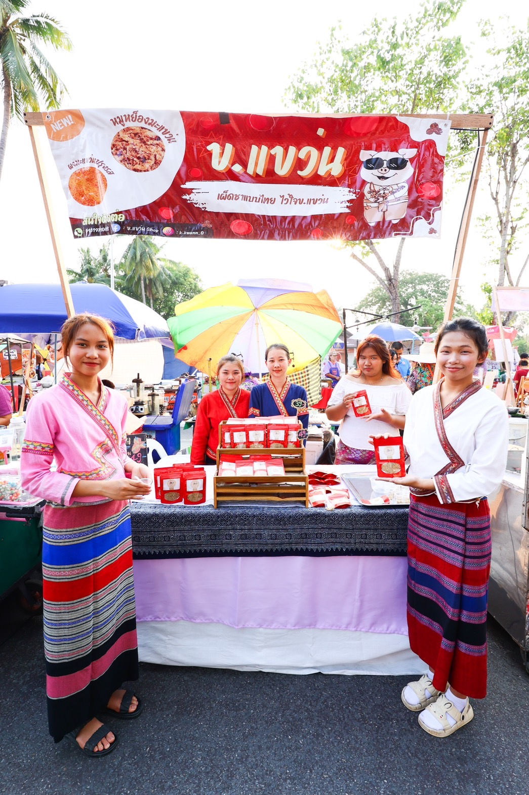

มูลนิธิเพาะพันธุ์ปัญญาด้วยการสนับสนุนของธนาคารกสิกรไทย สานต่อโครงการเพาะพันธุ์ปัญญาแคมป์ โดยจัดแคมป์ รุ่นปี 2567 ภายใต้แนวคิด “อัพเวลสกิลธุรกิจ เสริมทักษะชีวิต ติดปีกผู้ประกอบการ” ให้แก่เยาวชนระดับมัธยมศึกษาของจังหวัดน่าน จำนวน
50 คน จาก 13 โรงเรียน เพื่อสร้างการเรียนรู้และประสบการณ์การทำธุรกิจเสมือนจริงตลอดระยะเวลา 79 วัน ซึ่งมีความเข้มข้นทั้งเนื้อหา รูปแบบการเรียนรู้ ที่จะสร้างโอกาสและประสบการณ์ในการพัฒนาองค์ความรู้และทักษะใหม่ๆ ด้วยการลงมือปฏิบัติด้วยตนเอง ตามกระบวนการโครงงานฐานวิจัย
เพื่อให้เยาวชนมีระบบความคิดและความพร้อมที่จะใช้ชีวิตอย่างสมดุลในอนาคต
ต่อยอดการเรียนรู้ตามกระบวนการโครงงานฐานวิจัย สร้างตรรกะและระบบคิด ผ่านการปฏิบัติจริง
ดร.อดิศวร์ หลายชูไทย กรรมการผู้จัดการ มูลนิธิเพาะพันธุ์ปัญญา เปิดเผยว่า โครงการเพาะพันธุ์ปัญญาแคมป์เป็นการสานต่อการพัฒนาระบบการเรียนรู้ตามกระบวนการโครงงานฐานวิจัย (Research-based Learning) ที่ต้องการพัฒนากระบวนการคิดของเยาวชนให้สามารถตั้งคำถามและหาคำตอบด้วยตรรกะ
จนเกิดเป็นกระบวนการเรียนรู้ด้วยตัวเองตลอดชีวิต เป็นการสร้างองค์ความรู้ใหม่ ทักษะใหม่ และประสบการณ์ในการลงมือปฏิบัติจริง เพื่อให้เยาวชนมีความพร้อมและนำความรู้ที่ได้รับไปใช้ในการดำเนินชีวิตอย่างสมดุลในอนาคต ตามเจตนารมณ์ของมูลนิธิฯ ที่ต้องการพัฒนาทักษะและเสริมสร้างการเรียนรู้ให้แก่เยาวชนไทย
ให้สามารถกลับมาดูแลท้องถิ่น พัฒนาชุมชน และตอบโจทย์การพัฒนาอย่างยั่งยืนในจังหวัดน่าน ซึ่งจากการดำเนินการในปี 2566 ได้รับเสียงสะท้อนจากคุณครูที่ร่วมสังเกตการณ์และเยาวชนที่เข้าร่วมแคมป์ คือ นอกจากจะได้เรียนรู้ทักษะการเป็นผู้ประกอบการแล้ว ยังเป็นการพัฒนาทักษะในหลายด้าน
อาทิ การจัดการอย่างมืออาชีพทั้งกระบวนการ การฝึกฝนการทำงานเป็นทีม การตัดสินใจอย่างเป็นระบบ การเรียนรู้ที่จะวิเคราะห์สาเหตุและแก้ปัญหา นอกจากนี้ ยังเป็นการสร้างเครือข่าย ความสัมพันธ์ และมิตรภาพระหว่างเพื่อนร่วมแคมป์ที่มาจากหลากหลายพื้นที่ทั่วจังหวัดน่าน
มูลนิธิเพาะพันธุ์ปัญญาจึงเดินหน้าจัดเพาะพันธุ์ปัญญาแคมป์ต่อเนื่องในปี 2567

เริ่มด้วยพรีแคมป์ลงพื้นที่ให้ความรู้ คัดเลือกเยาวชนตัวจริง 50 คน ไปต่อ 3 แคมป์
จากการถอดบทเรียนในรุ่นปี 2566 มูลนิธิเพาะพันธุ์ปัญญาได้เดินหน้าโครงการเพาะพันธุ์ปัญญาแคมป์ รุ่นปี 2567 เริ่มด้วย “แคมป์เพาะกล้า” ในเดือนมกราคมที่ผ่านมา ซึ่งมีเยาวชนชั้นมัธยมศึกษาปีที่ 4-5 รวม 100 คน จาก 13 โรงเรียน ใน 10 อำเภอ ทั่วทุกพื้นที่ในจังหวัดน่านมาเข้าร่วมแคมป์ เพื่อเตรียมความพร้อมก่อนเข้าสู่แคมป์ผู้ประกอบการ 3 แคมป์ ด้วยการเรียนรู้ในรูปแบบที่ได้สาระและความสนุกสนาน ฝึกฝนทักษะเบื้องต้นที่ผู้ประกอบการควรมี พร้อมโอกาสสำคัญในการทัศนศึกษาเยี่ยมชมสถานประกอบการในจังหวัดน่าน และรับการเสริมความรู้ทางธุรกิจผ่านการเรียนออนไลน์ โดยมีนักเรียนจากแคมป์เพาะกล้าจำนวน 50 คน จาก 13 โรงเรียน ที่ผ่านการคัดเลือกเข้าสู่แคมป์ต่อๆ ไป

โรงเรียนที่เข้าร่วมโครงการ “เพาะพันธุ์ปัญญาแคมป์” รุ่นปี 2567 จำนวน 13 โรงเรียน ประกอบด้วย 1. โรงเรียนไตรเขตประชาสามัคคี รัชมังคลาภิเษก 2. โรงเรียนน่านคริสเตียนศึกษา 3. โรงเรียนนาน้อย 4. โรงเรียนนาหมื่นพิทยาคม 5. โรงเรียนบ่อเกลือ 6. โรงเรียนมัธยมป่ากลาง
7. โรงเรียนเมืองยมวิทยาคาร 8. โรงเรียนแม่จริม 9. โรงเรียนศรีนครน่าน 10. โรงเรียนสตรีศรีน่าน 11. โรงเรียนสาธุกิจประชาสรรค์ 12. โรงเรียนสารทิศพิทยาคม และ 13. โรงเรียนหนองบัวพิทยาคม

“เพาะพันธุ์ปัญญาแคมป์” รุ่นปี 2567 เกิดขึ้นระหว่างวันที่ 16 มีนาคม-2 มิถุนายน 2567 รวมระยะเวลาทั้งหมด 79 วัน ทำกิจกรรมต่อเนื่อง 3 แคมป์ ได้แก่
● แคมป์ที่ 1 “กล้าเรียน” (วันที่ 16-22 มีนาคม 2567) ปูพื้นฐานสร้างสรรค์ไอเดียธุรกิจ ความเป็นไปได้ และเรียนรู้สิ่งที่จำเป็นในการทำธุรกิจ นำความรู้ที่ได้ไปพัฒนาไอเดียธุรกิจที่มีคุณค่าและเพื่อนำไปทดลองตลาดต่อไป (Minimum Viable
Product: MVP)
● แคมป์ที่ 2 “กล้าลุย” (วันที่ 18-22 เมษายน 2567) บุกตลาด ลงมือขาย พบลูกค้าตัวจริง เรียนรู้จุดเด่น จุดด้อย เพื่อพัฒนาต่อยอดผลิตภัณฑ์และบริการ นำผลิตภัณฑ์หรือบริการที่คิดและพัฒนาไปทดลองขายหรือสอบถามความคิดเห็นจากผู้บริโภคตัวจริง
เพื่อนำผลตอบรับที่ได้ไปพัฒนาและเดินหน้าจัดจำหน่ายเป็นธุรกิจจริงต่อไป
● แคมป์ที่ 3 “กล้าก้าว” (แบ่งเป็น 2 รอบ ระหว่างวันที่ 24-26 พฤษภาคม และวันที่ 31 พฤษภาคม-2 มิถุนายน 2567) เยาวชนจะต้องรายงาน และนำเสนอผลประกอบการจากการทำธุรกิจในช่วง 2 เดือนที่ผ่านมา ต่อคณะกรรมการซึ่งเป็นผู้ทรงคุณวุฒิและนักธุรกิจตัวจริง
โดยจะประกาศผลและมอบรางวัลให้แก่ทีมที่มีผลงานยอดเยี่ยมและได้รับคะแนนสะสมมากที่สุด

นอกจากบทเรียนและเวิร์กชอปที่เรียนรู้ใน 3 แคมป์ เยาวชนจะได้เปิดโลกทัศน์เรียนรู้ประสบการณ์จากบุคคลต้นแบบที่ประสบความสำเร็จด้านธุรกิจและผู้นำความคิดด้านการพัฒนาอย่างยั่งยืนระดับประเทศที่เดินทางมาแชร์ความรู้ ประสบการณ์ด้วยตัวเองตลอดช่วงเวลาของการเข้าแคมป์อีกด้วย

เพิ่มกระบวนการเรียนรู้การบริหารธุรกิจเสมือนจริง และเปิดแพลตฟอร์มออนไลน์ให้เยาวชน เข้าสู่โลกการเรียนรู้ด้วยตนเองไม่รู้จบ
ในปีนี้ มูลนิธิฯ ได้ออกแบบกิจกรรมให้เยาวชนสัมผัสประสบการณ์ธุรกิจที่เสมือนจริงในอีกมิติ ผ่านการให้ถือครองหุ้นในบริษัท (จำลอง) สร้างความรู้สึกร่วมในการเป็นเจ้าของธุรกิจ และนำเสนอแผนธุรกิจต่อคณะกรรมการบริษัท (จำลอง) ซึ่งเป็นผู้ทรงคุณวุฒิ ผู้นำองค์กรที่มีประสบการณ์จากหลากหลายธุรกิจในประเทศ
เพื่อการวางแผนธุรกิจ และการใช้งบประมาณอย่างเหมาะสม
นอกจากนี้ เพื่อให้เยาวชนเข้าถึงการเรียนรู้ได้สะดวกยิ่งขึ้น ทางโครงการได้เปิดแพลตฟอร์ม เพื่อการเรียนรู้แบบ Self-learning ที่เว็บไซต์ www.pohpunpanyaafterklass.com ให้เยาวชนทั้งที่อยู่ในโครงการและนอกโครงการสามารถจัดสรรเวลาเรียนรู้หลักสูตรเสริมนอกเวลาเรียนด้วยตนเองผ่านระบบออนไลน์
ด้วยสื่อการเรียนรู้ที่เข้าใจง่าย สามารถเข้าถึงได้ทุกที่ ทุกเวลา ในรูปแบบคลิปวิดีโอ พร้อมแบบทดสอบท้ายคลิป ด้วยวิชาที่จำเป็นในโลกธุรกิจ เช่น การสร้างแบรนด์ การคิดธุรกิจแบบวิสาหกิจชุมชน การสร้างผลิตภัณฑ์และการทดสอบตลาด การทำการตลาดออนไลน์ เป็นต้น

ทำงานใกล้ชิดกับครูที่ปรึกษา ร่วมบ่มเพาะเยาวชน เปลี่ยนระบบคิด สร้างทักษะนำไปสู่การปฏิบัติได้จริง
ครูที่ปรึกษา เป็นผู้มีส่วนสำคัญที่ช่วยสนับสนุนกลไกการเรียนรู้ของเยาวชน โครงการจึงทำงานใกล้ชิดร่วมกับครูที่ปรึกษาโครงการของทุกโรงเรียน แลกเปลี่ยนคำแนะนำและองค์ความรู้โดยครูที่ปรึกษาจะช่วยสนับสนุนให้ผู้เรียนเกิดกระบวนการเรียนรู้ (Facilitator) ทั้งในช่วงที่อยู่ในแคมป์และเมื่อนักเรียนต้องกลับไปทำธุรกิจในพื้นที่ของตนเอง
ดร.อดิศวร์ กล่าวเพิ่มเติมว่า เพาะพันธุ์ปัญญาแคมป์เป็นแคมป์ที่มุ่งพัฒนาเยาวชนให้มีระบบความคิดเป็นตรรกะ มีแนวคิดของการเป็นผู้ประกอบการ ให้เยาวชนรู้จักวิธีการเรียนรู้ด้วยตัวเอง ซึ่งจะเป็นสิ่งที่ทำให้เกิดกระบวนการเรียนรู้ตลอดชีวิต สามารถเอาตัวรอด
มีความเป็นอยู่ที่ดีและสมดุล ภายใต้การเปลี่ยนแปลงอย่างรวดเร็วของสิ่งรอบตัว เรียนรู้ที่จะล้มแล้วลุก มองความล้มเหลวเป็นบทเรียนที่จะสร้างความสำเร็จให้กับตัวเอง ทั้งหมดนี้สะท้อนความมุ่งหมายของมูลนิธิฯ ที่จะบ่มเพาะเยาวชน เตรียมพร้อมเติบโตเป็นกลุ่มพลเมืองที่มีคุณภาพ
ก่อเกิดเป็นเครือข่ายเยาวชนคนน่านรุ่นใหม่ที่มีส่วนในการพัฒนาจังหวัดบ้านเกิดต่อไป รวมถึงเป็นกำลังสำคัญในการสร้างสรรค์เศรษฐกิจ สังคม สิ่งแวดล้อม ธรรมภิบาล และความยั่งยืนของประเทศในอนาคต